武器使用规范
后坐力基准
RECOIL BASELINE在设定动画关键帧时，理解不同口径和重量带来的自由后坐力能量（Free Recoil Energy）至关重要。后坐力能量直接决定了角色射击时身体的位移和震动幅度。
| 后坐力等级 | 能量范围 | 动画表现 | 适用武器 |
|---|---|---|---|
| 微弱 | < 6 ft-lbs | 枪身轻微震动，射手几乎无位移 | 手枪(9mm)、冲锋枪 |
| 轻度 | 6-10 ft-lbs | 枪口可见上跳，可保持连续射击 | 突击步枪(5.56mm) |
| 中度 | 10-20 ft-lbs | 枪口上跳明显，需重新获取瞄准基线 | 半自动步枪、狙击(.308) |
| 强烈 | 20-30 ft-lbs | 剧烈枪口上跳，射手身体明显后倾 | 散弹枪(12号) |
| 极端 | > 30 ft-lbs | 毁灭性冲击，需两脚架或固定阵地 | 重机枪/反器材(.50 BMG) |
主要武器后坐力数据对比
| 型号 | 口径 | 空枪重量 | 后坐力 | 射速 |
|---|---|---|---|---|
| M4A1 | 5.56×45mm | 2.95 kg | ~5.5 | 700-950 |
| HK416 | 5.56×45mm | 3.5 kg | ~5.5 | 850 |
| AK-47 | 7.62×39mm | 4.8 kg | ~7.1 | 600 |
| MP5 | 9×19mm | 2.54 kg | ~3-4 | 800 |
| Rem. 870 | 12 Gauge | 3.2 kg | ~20-25 | 泵动 |
| M24 SWS | .308 Win | 5.4 kg | ~18.3 | 栓动 |
| Barrett M82 | .50 BMG | 14 kg | ~83.2 | 半自动 |
| M14 | 7.62×51mm | 4.1 kg | ~18.3 | 750 |
| M249 SAW | 5.56×45mm | 7.5 kg | ~5.5 | 750-1000 |
| Glock 17 | 9×19mm | 0.63 kg | ~4-5 | 半自动 |
| M2 Browning | .50 BMG | 38 kg | 极端 | 450-600 |
| RPG-7 | 85mm PG-7V | 7.0 kg | 无后坐(后喷焰) | 单发 |
突击步枪
ASSAULT RIFLE M4A1 / HK416 / AK-47技术参数 & 动画表现
| 型号 | 口径 | 重量 | 后坐力 | 射速 |
|---|---|---|---|---|
| M4A1 | 5.56×45mm | 2.95 kg | ~5.5 ft-lbs | 700-950 |
| HK416 | 5.56×45mm | 3.50 kg | ~5.5 ft-lbs | 850 |
| AK-47 | 7.62×39mm | 4.80 kg | ~7.1 ft-lbs | 600 |
动画表现要点
单发射击
枪口微抬（约2-3度），射手肩部轻微受力，准星迅速回落至原位。整个后坐力循环约0.1秒。
连发射击
枪身呈现高频向后震颤，枪口有向右上方偏转趋势（膛线旋转导致），射手通过身体前倾和手臂下压克服。
重量感
虽然较轻（约3kg），但在快速转身、切换目标时，仍需表现出武器前部的惯性和摆动延迟。
持枪与战术规范
C-Clamp握法 — 辅助手伸直握住护木前端，拇指跨过护木顶部向下压，其余四指在下方托住。最大程度控制枪口上跳。
现代等腰站姿 — 双脚与肩同宽，身体正面朝向目标，重心前移，双肩下沉。枪托紧贴肩窝凹槽。
贴腮瞄准 — 头部自然下倾，面颊紧贴枪托，视线与瞄准镜/机械瞄具平齐。保持自然的颈部角度。
弹药 & 真实参考
5.56×45mm NATO (M4A1/HK416)
弹头重量: 55-77 grain (3.56-5.0g) | 弹壳长度: 44.7mm (黄铜) | 初速: 940 m/s | 枪口能量: ~1,767 J
枪口焰特征: 中等大小星形闪光，持续时间短。抛壳轨迹向右后方。
7.62×39mm (AK-47)
弹头重量: 122-123 grain (7.9g) | 弹壳长度: 38.7mm (钢制/黄铜) | 初速: 715 m/s | 枪口能量: ~2,010 J
枪口焰特征: 较大火球，橙黄色，持续时间略长。弹壳呈明显的锥度。
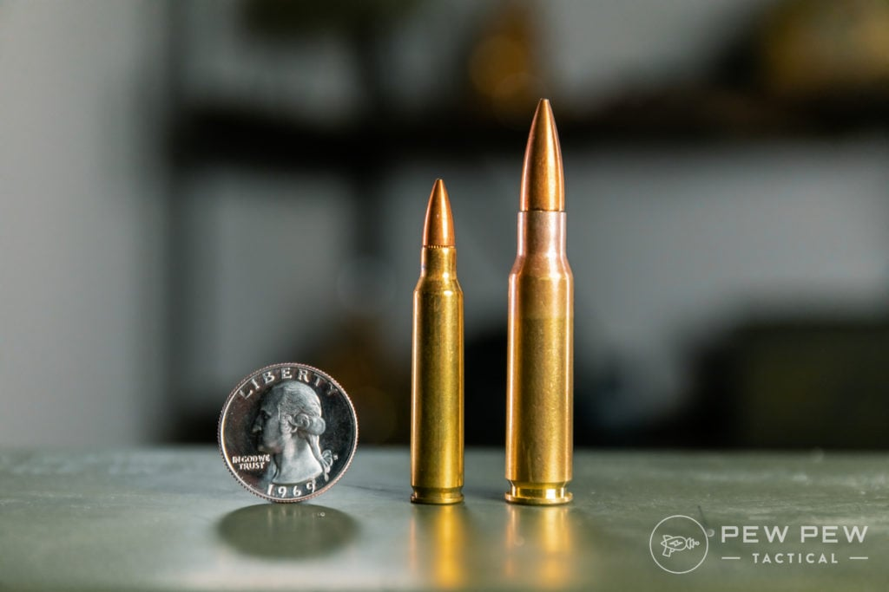
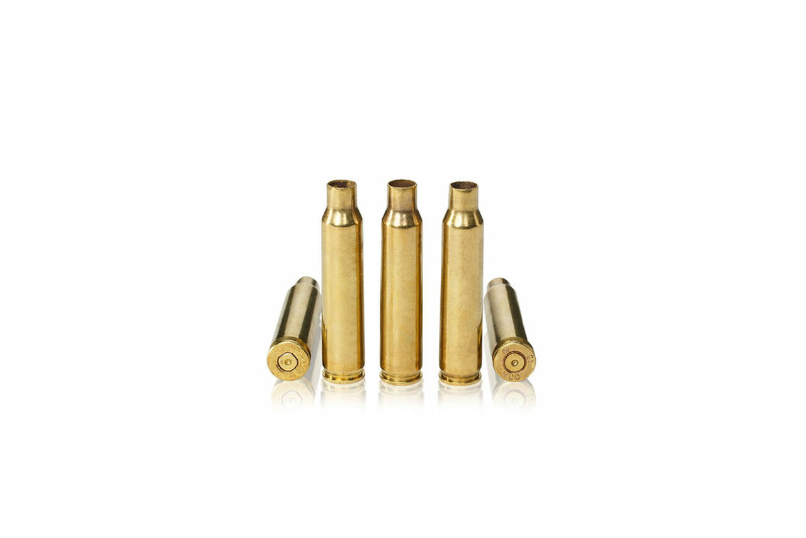
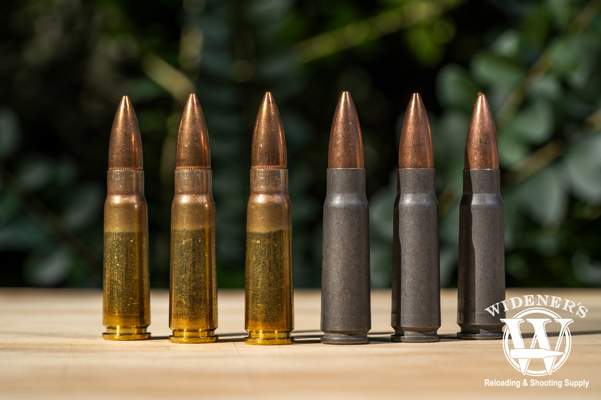
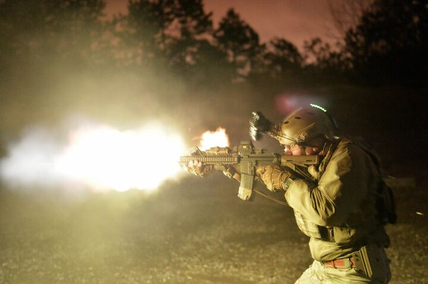
动作关键插图
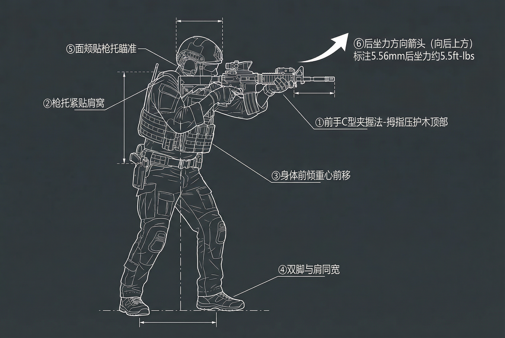
冲锋枪
SUBMACHINE GUN MP5 / FN P90 / MAC-10技术参数 & 动画表现
| 型号 | 口径 | 重量 | 后坐力 | 射速 |
|---|---|---|---|---|
| MP5 | 9×19mm | 2.54 kg | ~3-4 ft-lbs | 800 |
| FN P90 | 5.7×28mm | 2.54 kg | ~2-3 ft-lbs | 900 |
| MAC-10 | .45 ACP/9mm | 2.84 kg | ~5-6 ft-lbs | 1090 |
动画表现要点
射击反馈
全自动射击时，枪身只有极小幅度的水平和垂直震颤。射手身体姿态几乎不受影响，可保持完美的移动射击姿态。
机动性
武器短小精悍，角色在狭窄空间（走廊、门口）内的切角动作应极其迅速流畅，没有长枪管带来的阻碍感。
MAC-10特殊性
射速极高（1090发/分），因体积小重量轻，全自动时枪口会剧烈抖动，难以精确控制。
持枪与战术规范
紧凑持枪 — 辅助手握住弹匣匣套前方或垂直握把。双肘自然下垂，紧贴身体两侧，减小暴露面积。
高位准备 — 未交火状态下枪口微抬，视线越过瞄准具观察前方；发现目标后只需微调角度即可射击。
CQB战术 — 在室内清房时，枪口始终指向威胁方向。通过门口时缩短持枪距离，防止枪管暴露或被夺。
弹药 & 真实参考
9×19mm Parabellum (MP5/MAC-10)
弹头重量: 115-147 grain (7.5-9.5g) | 弹壳长度: 19.15mm (黄铜) | 初速: 360-400 m/s | 枪口能量: ~500-600 J | 枪口焰: 较小，短促闪光。
5.7×28mm (FN P90)
弹头重量: 31-40 grain | 弹壳长度: 28.83mm (特殊涂层) | 初速: 715 m/s | 外观类似缩小版步枪弹，极高初速和穿甲能力，后坐力极小。
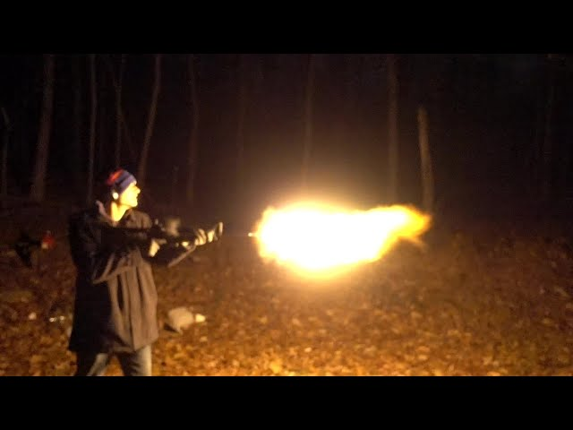
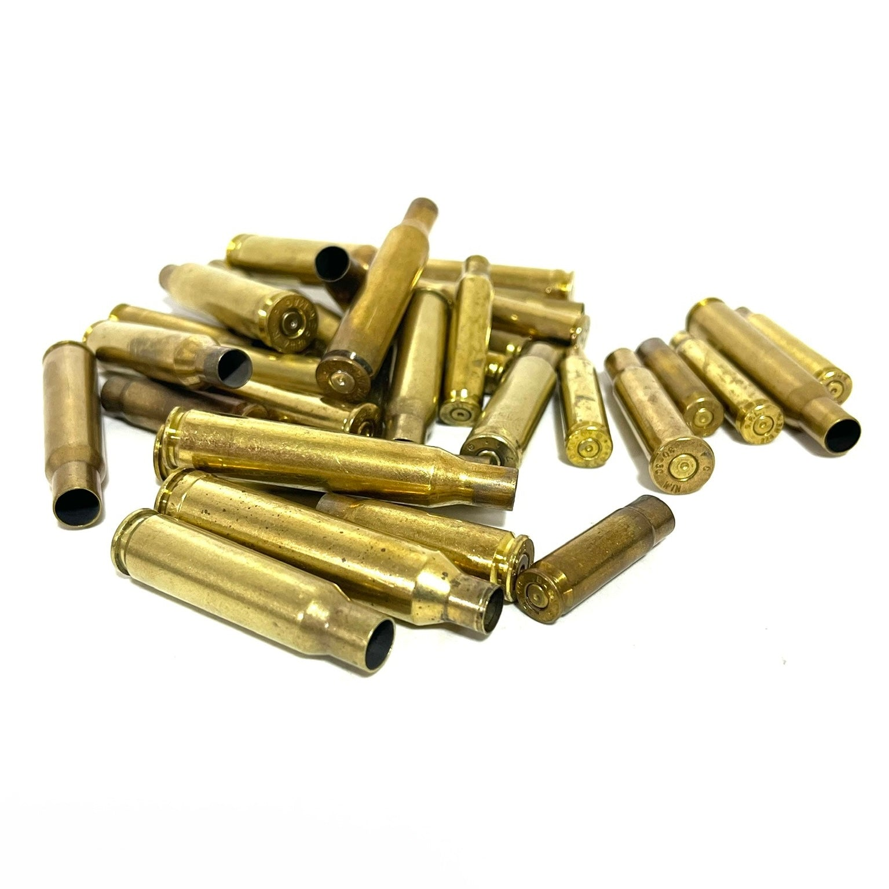
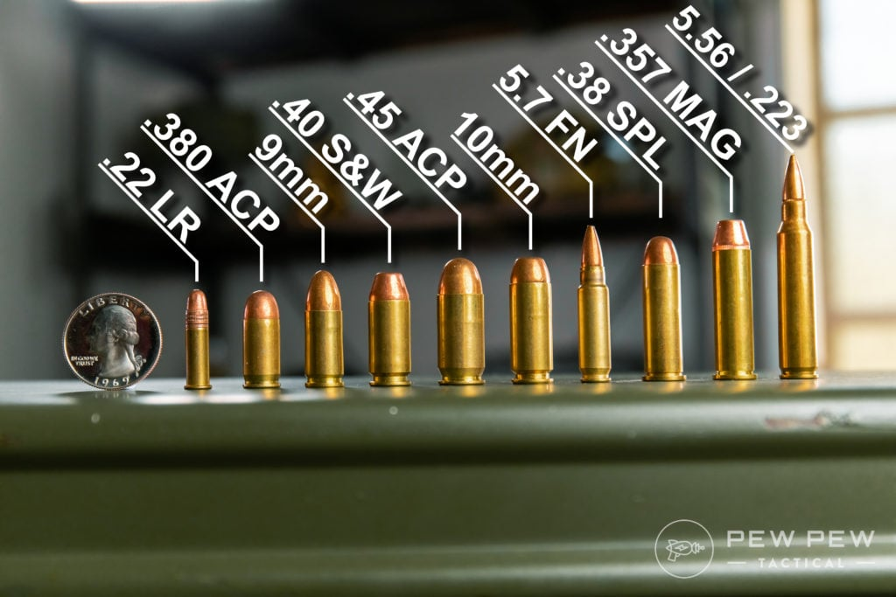
动作关键插图
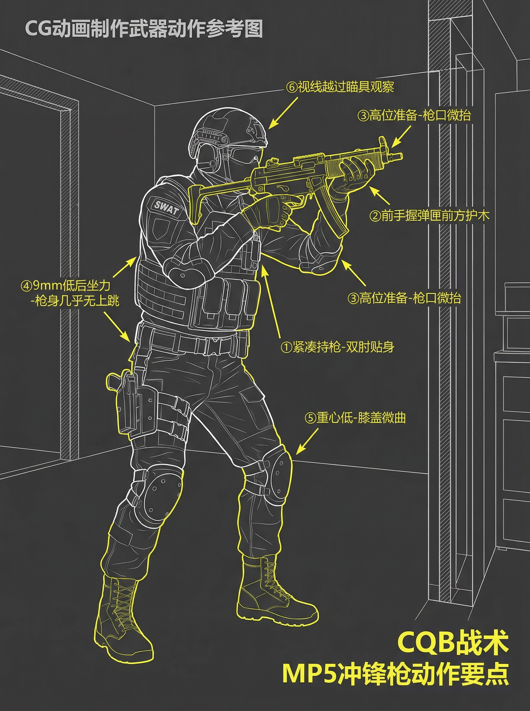
散弹枪
SHOTGUN Remington 870 / Mossberg 500 / Benelli M4技术参数 & 动画表现
| 型号 | 口径 | 重量 | 后坐力 | 类型 |
|---|---|---|---|---|
| Remington 870 | 12 Gauge | 3.2-3.6 kg | ~20-25 ft-lbs | 泵动式 |
| Mossberg 500 | 12/20 Gauge | 3.4 kg | ~20-25 ft-lbs | 泵动式 |
| Benelli M4 | 12 Gauge | 3.5 kg | ~15-20 ft-lbs | 半自动 |
动画表现要点
后坐力冲击
每次击发枪口发生剧烈上跳（约15-20度），枪托狠狠向后撞击射手肩窝。上半身被迫后仰，需明显肌肉发力恢复。
泵动上膛
击发后辅助手用力向后拉动护木抛出粗大的塑料弹壳，再猛烈向前推入新弹。动作要有明显的顿挫感和力量感。
弹丸扩散
散弹枪发射时枪口火焰巨大，鹿弹/独头弹的后坐力最强。减装弹后坐力约降低30-40%。
持枪与战术规范
对抗姿态 — 前导脚大幅度迈出，重心几乎全部压在前腿上。身体采用极具侵略性的前倾站姿对抗后坐力。
死锁肩窝 — 枪托必须死死抵住肩窝深处，任何缝隙都会导致射击时严重的撞击伤害和精度下降。
推拉发力 — 射击手向后拉握把，辅助手向前推护木，形成对抗张力以稳定枪身。
弹药 & 真实参考
12 Gauge (12号口径)
弹壳长度: 70mm (2¾"), 76mm (3"), 89mm (3½") | 材质: 塑料外壳+黄铜底座 | 初速: 370-450 m/s | 枪口能量: ~3,000-4,000 J
弹药种类差异
鹿弹: 包含多枚铅丸(00号鹿弹含8-9枚8.4mm铅丸)，近战用。
独头弹: 单枚重型铅弹，中距离和破坏掩体。
鸟弹: 包含大量细小铅砂。
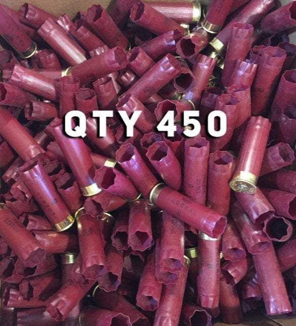
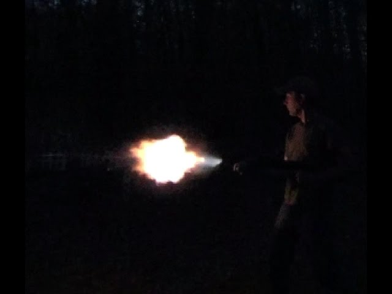
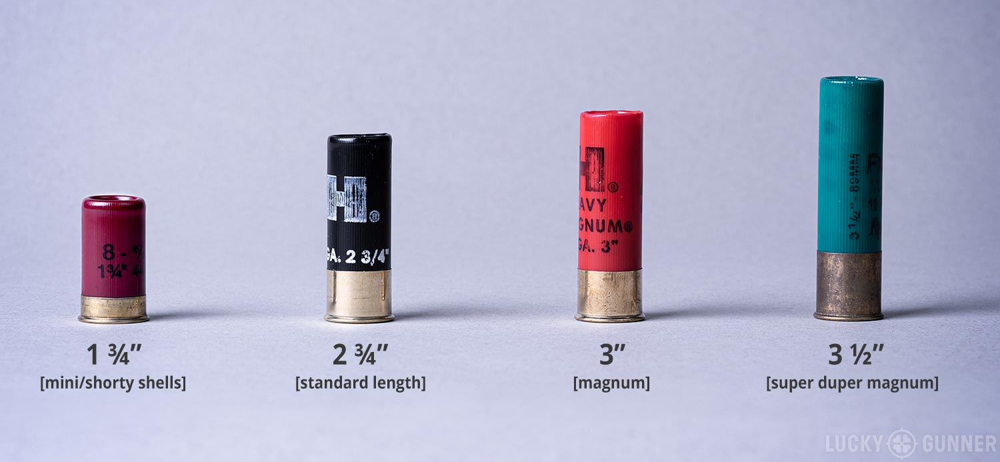
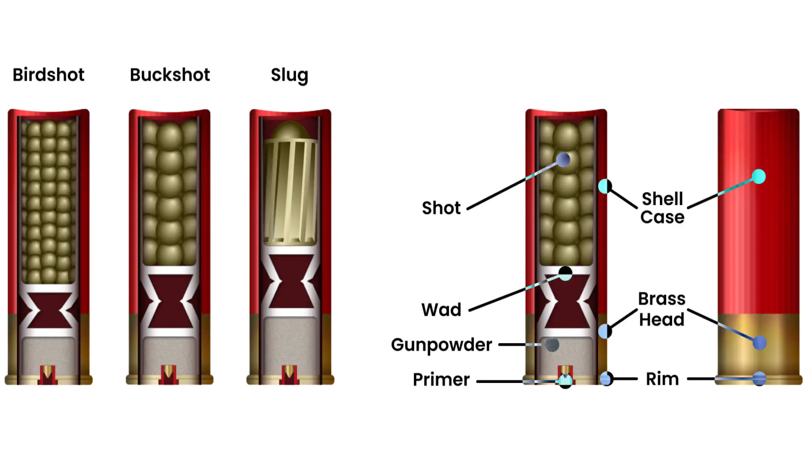
动作关键插图
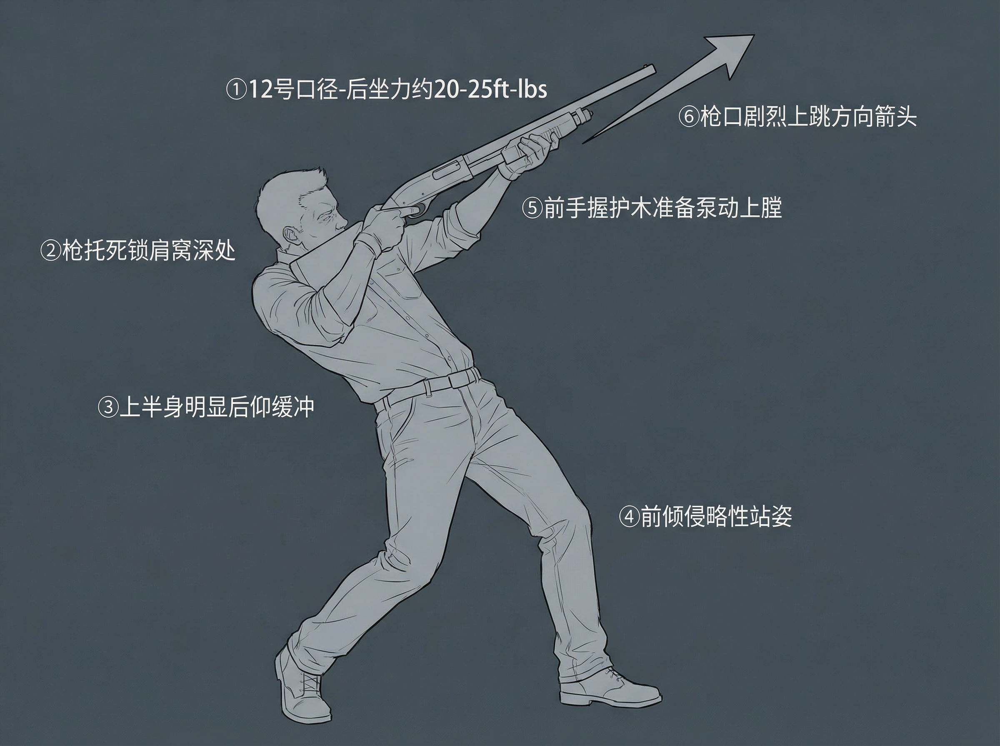
狙击步枪
SNIPER RIFLE M24 SWS / Barrett M82 / AWM技术参数 & 动画表现
| 型号 | 口径 | 重量 | 后坐力 | 类型 |
|---|---|---|---|---|
| M24 SWS | 7.62×51mm | 5.4 kg | ~18.3 ft-lbs | 栓动式 |
| Barrett M82 | .50 BMG | 14.0 kg | ~83.2 ft-lbs | 半自动/管退 |
| AWM | .338 Lapua | 6.5 kg | ~37.7 ft-lbs | 栓动式 |
动画表现要点
击发瞬间
M24等栓动步枪击发时枪身有明显向后平推，伴随中等幅度枪口上扬。Barrett M82击发时巨大气流吹起周围尘土，枪管有明显向后收缩（管退式原理）。
拉栓动作
击发后，右手离开扳机，向上旋转枪栓柄，向后拉到底抛壳，再向前推并向下闭锁。动作干脆利落。
呼吸节奏
瞄准阶段枪身随角色呼吸产生缓慢、有规律的起伏。击发通常发生在呼气末端的屏息瞬间。
持枪与战术规范
卧姿射击 — 最稳定的狙击姿势。身体与枪管轴线呈微小角度，双腿分开贴地。依赖骨骼而非肌肉支撑武器。
两脚架支撑 — 使用两脚架支撑枪管前方，辅助手握拳垫在枪托下方，通过挤压调节高低角。
扳机控制 — 使用食指第一指节指腹接触扳机，缓慢、平滑地向正后方施加压力，直到击发。
弹药 & 真实参考
7.62×51mm NATO / .308 Win (M24)
弹头重量: 147-175 grain | 初速: 838 m/s | 枪口能量: ~3,304 J | 枪口焰: 大型星形闪光，伴随明显冲击波。
.338 Lapua Magnum (AWM)
弹头重量: 250-300 grain | 初速: 880-915 m/s | 枪口能量: ~6,525 J | 专为远距离狙击设计，后坐力明显大于7.62mm。
.50 BMG / 12.7×99mm (Barrett M82)
弹头重量: 647-800 grain (42-52g) | 弹壳长度: 99mm | 初速: 890 m/s | 枪口能量: ~18,050 J | 枪口焰极其巨大，制退器将冲击波和火焰向两侧后方喷射，扬起大量尘土。
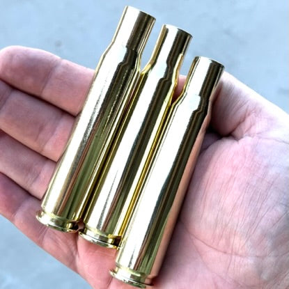
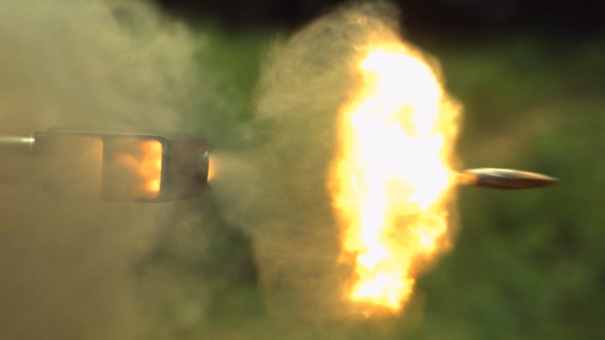
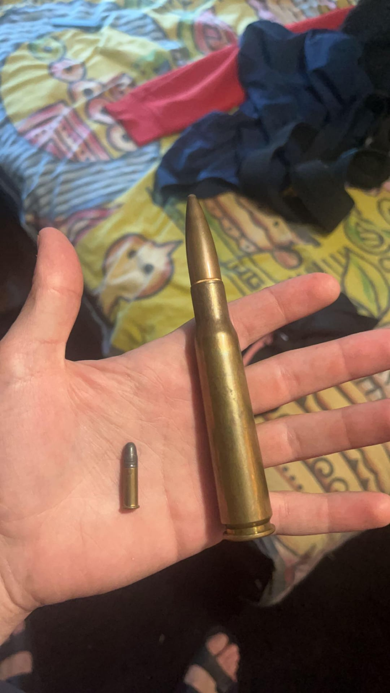
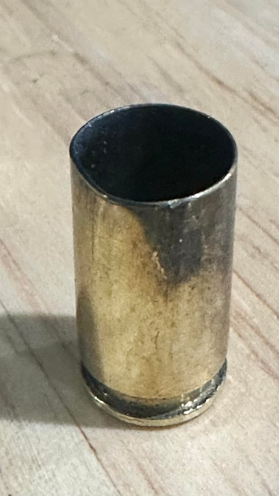
动作关键插图
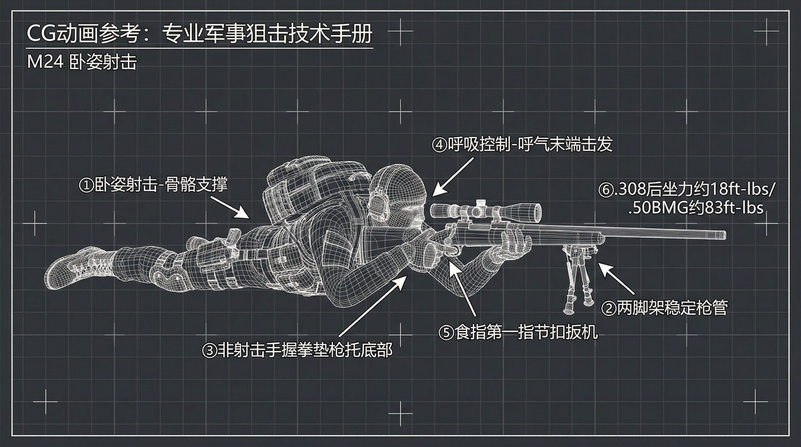
半自动步枪
SEMI-AUTO RIFLE M14 / M1 Garand / FN SCAR-H技术参数 & 动画表现
| 型号 | 口径 | 重量 | 后坐力 | 弹容量 |
|---|---|---|---|---|
| M14 | 7.62×51mm | 4.10 kg | ~18.3 ft-lbs | 20发 |
| M1 Garand | .30-06 Spr. | 4.31 kg | ~21.3 ft-lbs | 8发漏夹 |
| FN SCAR-H | 7.62×51mm | 3.86 kg | ~18.3 ft-lbs | 20发 |
动画表现要点
后坐力反馈
每次击发都有坚实的向后推力，枪口上跳幅度中等（约5-8度）。连续快速单发射击时，枪口有累积上扬趋势。
M1 Garand特有动作
打完8发漏夹中最后一发子弹时，漏夹伴随清脆的"叮"(Ping)声向上弹出。这是该枪独有的标志性动画。
单发节奏
半自动步枪强调沉稳的单发射击节奏。每次击发后需要约0.3-0.5秒重新获取瞄准基线。
持枪与战术规范
传统托握 — 辅助手多采用从下方托住护木的传统握法。
稳固站姿 — 需要更宽的步距和更明显的身体前倾，以对抗7.62mm弹药的冲击。
精确射手定位 — 通常作为精确射手步枪使用，利用掩体或两脚架增加稳定性。
REFERENCE VIDEOS
→ Slow Mo Muzzle Exit Compilation弹药 & 真实参考
7.62×51mm NATO / .308 Win
全威力步枪弹，比5.56mm长约14mm，弹头重一倍以上。后坐力是5.56mm的3倍左右。抛出的弹壳更长更重，落地声音更沉闷。
.30-06 Springfield (M1 Garand)
弹壳长度63.3mm，比7.62×51mm更长，装药量更大。枪口能量约3,800-4,000 J，后坐力强劲。
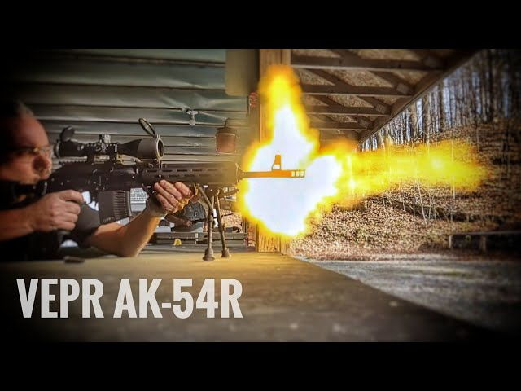
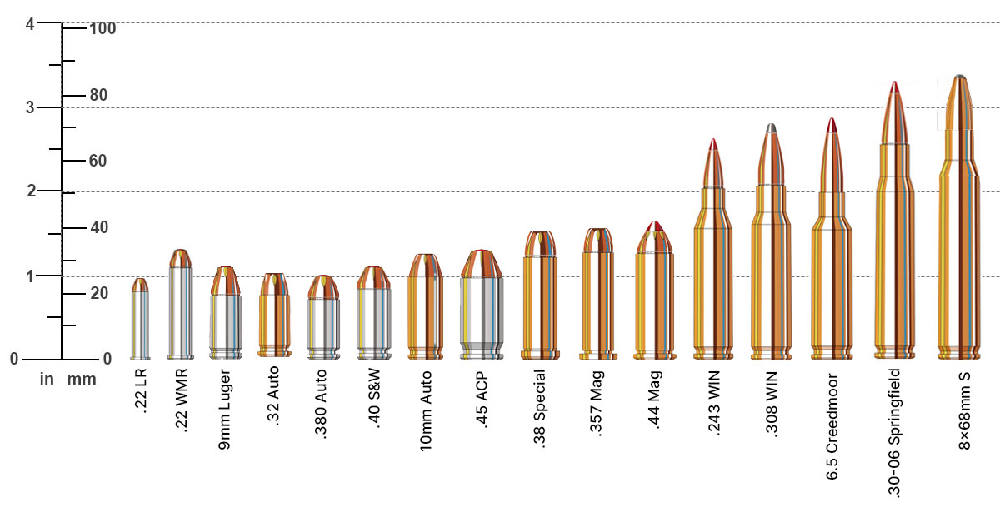
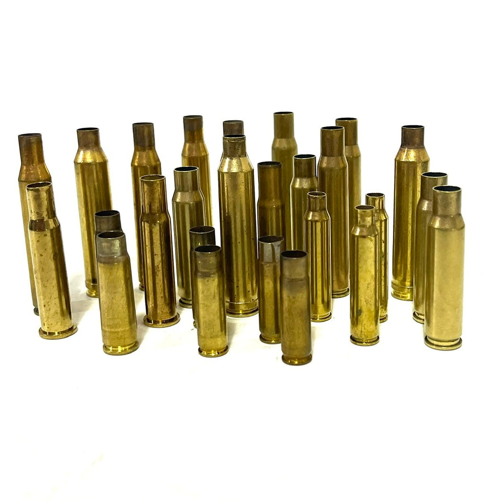
动作关键插图
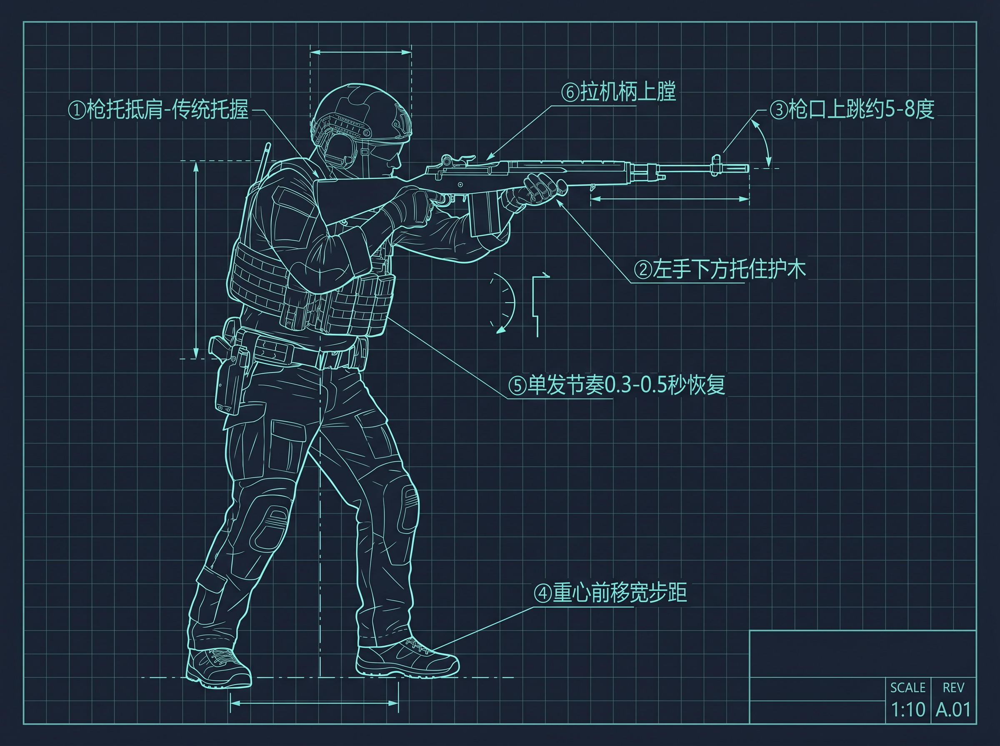
轻机枪
LIGHT MACHINE GUN M249 SAW / M240B技术参数 & 动画表现
| 型号 | 口径 | 重量 | 后坐力 | 射速 |
|---|---|---|---|---|
| M249 SAW | 5.56×45mm | 7.5/10 kg | ~5.5 ft-lbs | 750-1000 |
| M240B | 7.62×51mm | 12.5 kg | ~18.3 ft-lbs | 650-950 |
动画表现要点
重量体现
角色提枪奔跑或举枪瞄准时，动作应显得迟缓且吃力。枪身惯性极大，停止移动时枪口会有轻微晃动。M249全重约10kg。
持续射击
长点射（5-10发）时，虽然单发后坐力小，但连续震动会累积。枪身产生低频、大振幅抖动，射手需不断调整姿态。
弹链动态
射击时暴露在外的弹链随供弹机构拉动产生剧烈抖动和跳跃，抛壳窗如瀑布般喷吐弹壳和弹链节。
持枪与战术规范
腰际射击 — 紧急遭遇或移动压制时，射手将枪托夹在腋下或抵在腰际，利用曳光弹修正弹道。动作粗犷有力。
两脚架部署 — 标准战术是寻找掩体，展开两脚架进行卧姿或依托射击。
弹药管理 — 200发弹链箱重约3kg，换弹动作：打开供弹盖→取出空箱→装入新弹链→关闭供弹盖→拉机柄上膛。
REFERENCE VIDEOS
→ Full-Auto Machine Guns Compilation弹药 & 真实参考
弹链供弹 (Belt-Fed)
机枪主要使用M27(5.56mm)或M13(7.62mm)可散式弹链节。射击时，子弹被抽入弹膛，金属弹链节随空弹壳一起被抛出武器外。
曳光弹 (Tracer Rounds)
机枪弹链通常按 4:1 的比例混合普通弹与曳光弹。曳光弹在飞行中尾部燃烧发光（通常为红色/橙色），帮助射手修正弹道。
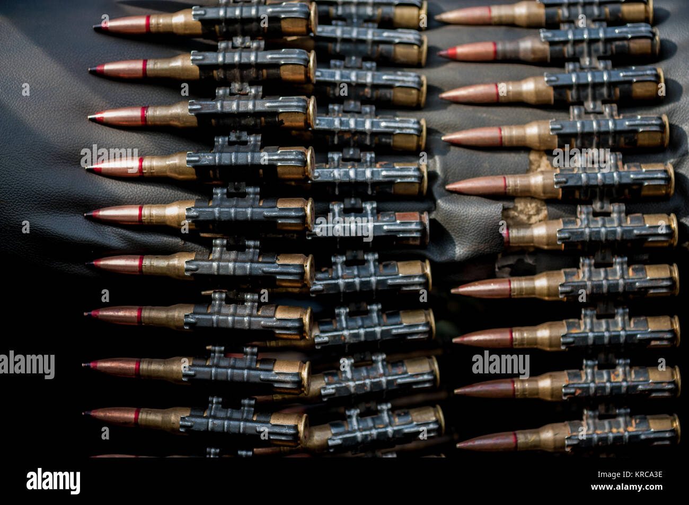
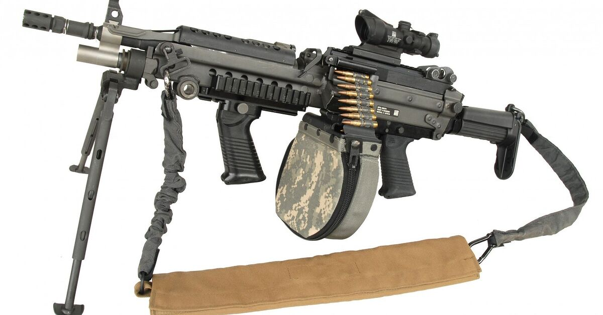
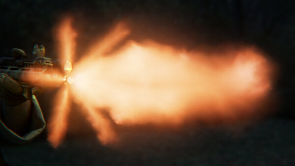
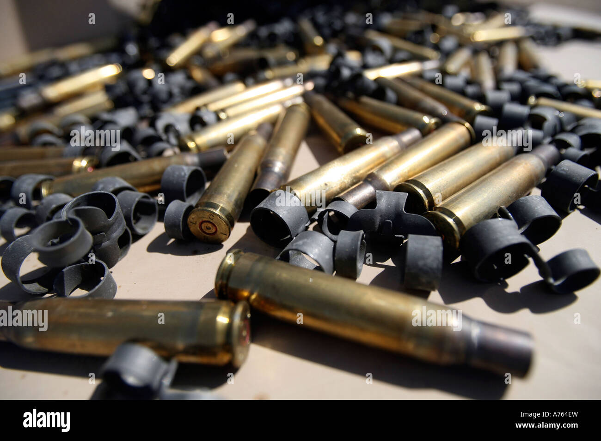
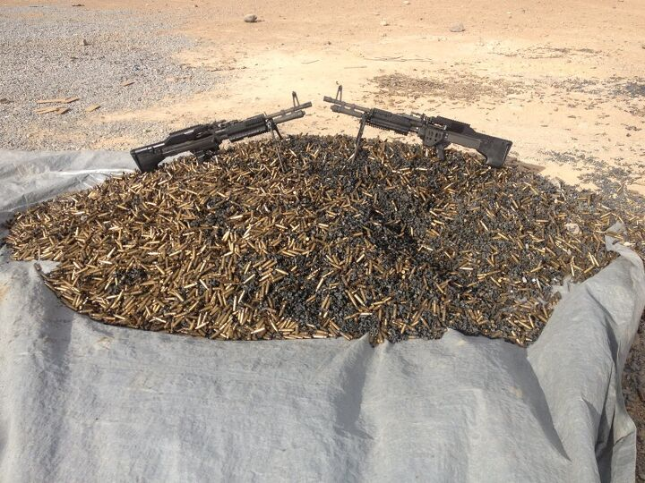
动作关键插图
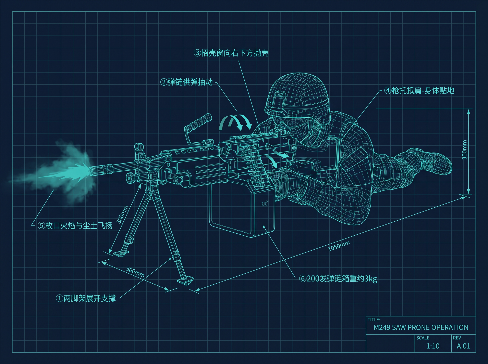
手枪
PISTOL M1911 / Glock 17 / Beretta M9 / SIG P320技术参数 & 动画表现
| 型号 | 口径 | 重量 | 后坐力 | 弹容量 |
|---|---|---|---|---|
| M1911 | .45 ACP | 1.10 kg | ~7-8 ft-lbs | 7-8发 |
| Glock 17 | 9×19mm | 0.63 kg | ~4-5 ft-lbs | 17发 |
| Beretta M9 | 9×19mm | 0.95 kg | ~4-5 ft-lbs | 15发 |
| SIG P320 | 9×19mm | 0.84 kg | ~4-5 ft-lbs | 17/21发 |
动画表现要点
套筒运动
击发瞬间套筒以极快速度向后滑动抛壳并复进，整个过程通常在几帧内完成。需要表现金属碰撞的干脆感。
枪口翻转
由于握把轴线低于枪管轴线，后坐力导致枪口向上翻转。9mm翻转幅度小且恢复快；.45口径翻转幅度明显更大。
空仓挂机
打完最后一发子弹后，套筒会被空仓挂机锁定在后方位置。插入新弹匣后按下释放钮，套筒向前复进上膛。
持枪与战术规范
虎口高卡 — 射击手虎口尽可能高地卡入握把后方凹槽，以降低枪管轴线与手腕的距离，减少枪口翻转。
辅助手包裹 — 辅助手掌根填补射击手留在握把侧面的空隙，四指包裹射击手四指。双拇指前指贴在套筒座左侧。
等腰站姿 — 双臂向前伸出但手肘保持微曲以吸收后坐力，双手向内挤压握把形成360度包裹。
REFERENCE VIDEOS
→ Glock & 1911 Slow Motion Shooting弹药 & 真实参考
9×19mm vs .45 ACP
9mm弹头较轻(115gr)，初速较高，枪口焰相对短促；.45 ACP弹头重且大(230gr)，初速低(亚音速)，推力感更强，弹壳呈粗短圆柱形。
抛壳动画细节
手枪抛壳通常向右侧或右后方飞出。空弹壳在空中会高速旋转。由于手枪离射手面部较近，动画中常可见弹壳从射手视线边缘掠过。
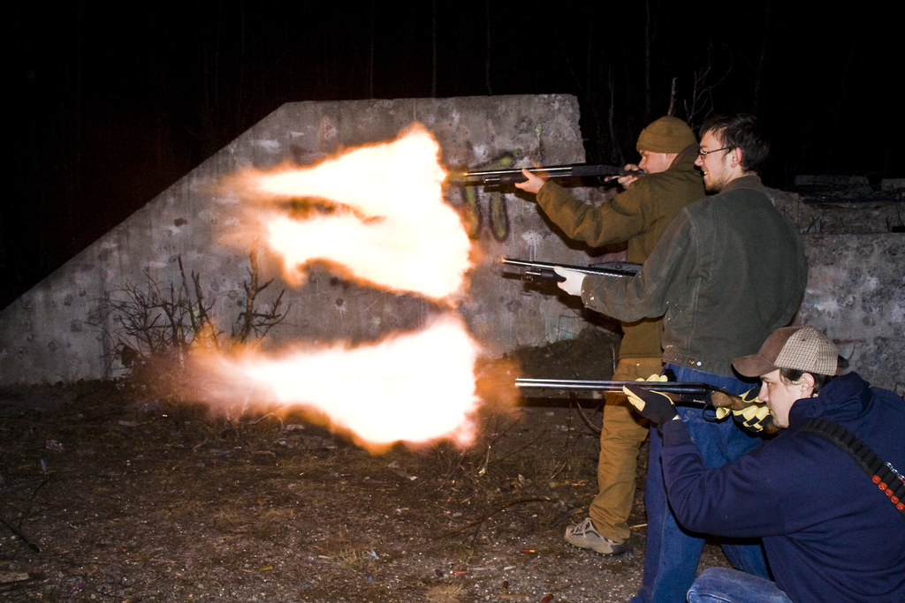
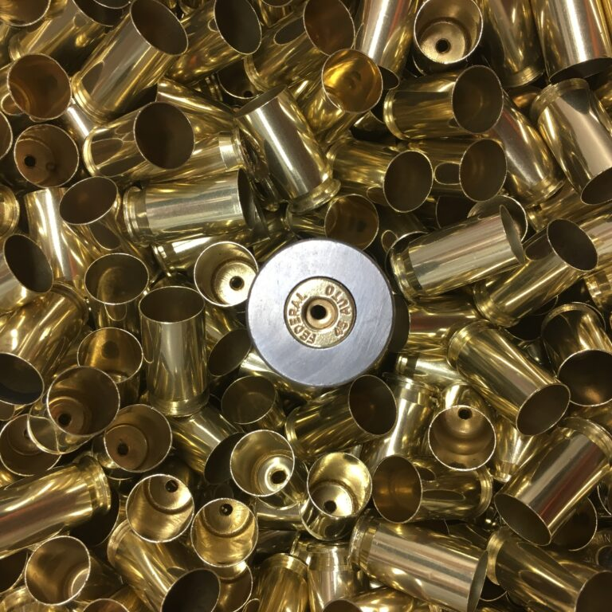
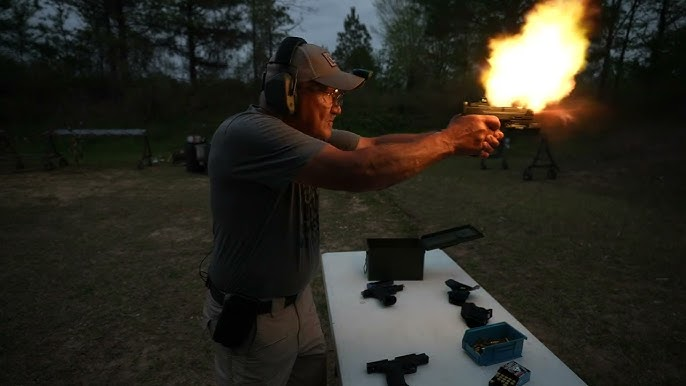
动作关键插图
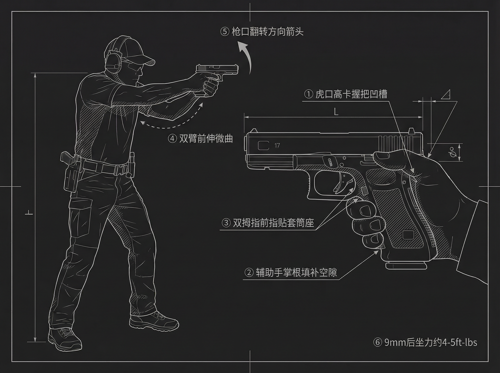
大口径重机枪
HEAVY MACHINE GUN M2 Browning / DShK技术参数 & 动画表现
| 型号 | 口径 | 重量 | 有效射程 | 射速 |
|---|---|---|---|---|
| M2 Browning | .50 BMG | 38.0 kg | 1800m | 450-600 |
动画表现要点
毁灭性震动
射击时产生极其猛烈的震动，整个三脚架或车载枪架都会随之剧烈摇晃。枪管有明显的短后坐运动（M2特征）。
枪口焰与冲击波
巨大的枪口焰，若带有制退器会向两侧喷射星形火焰。强大的冲击波会吹飞枪口下方数米内的尘土和杂物。
重型抛壳
M2从机匣正下方抛出巨大且沉重的黄铜弹壳（单枚重约110克）和金属弹链节，落地有沉闷的金属撞击声。
持枪与战术规范
蝴蝶扳机操作 — 射手双手握住双铲形握把(Spade Grips)，用双拇指同时按下中间的蝴蝶形扳机进行击发。
肩部支撑 — 虽然有三脚架支撑，但射手仍需将肩部紧紧顶住机匣后方或肩托，用身体重量协助稳定枪身。
供弹管理 — 弹链极其沉重（100发重约16kg），通常需要副射手协助托举弹链进入供弹口。
REFERENCE VIDEOS
→ M2 .50 Cal Machine Gun Fire U.S. Marines弹药 & 真实参考
.50 BMG / 12.7×99mm NATO
弹头重量: 647-800 grain (42-52g) | 弹壳长度: 99mm | 初速: 890 m/s | 枪口能量: ~18,050 J | 是步枪弹能量的10倍以上。弹壳极其粗大。
12.7×108mm (DShK)
苏系重机枪弹药，弹壳比.50 BMG稍长（108mm），性能相近。
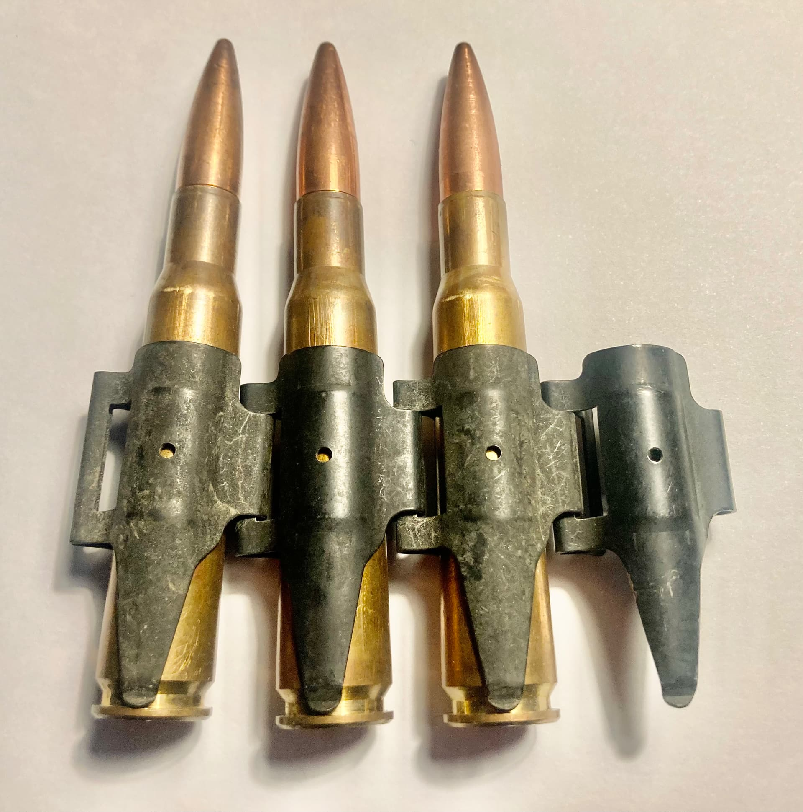
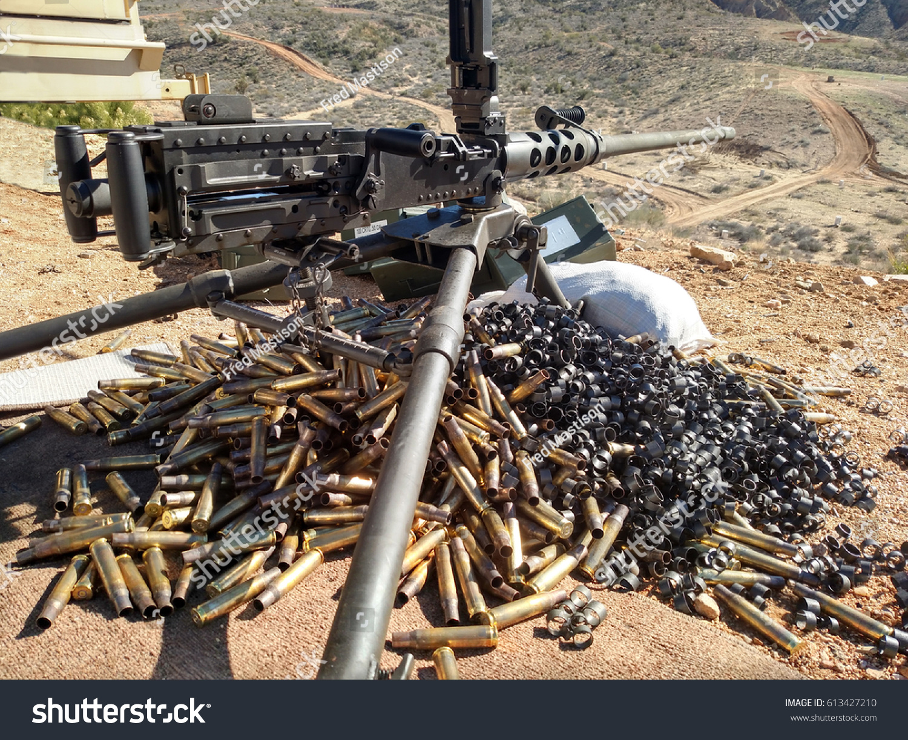

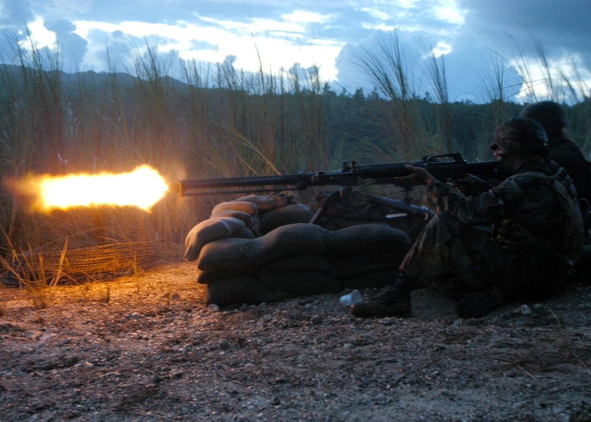
动作关键插图
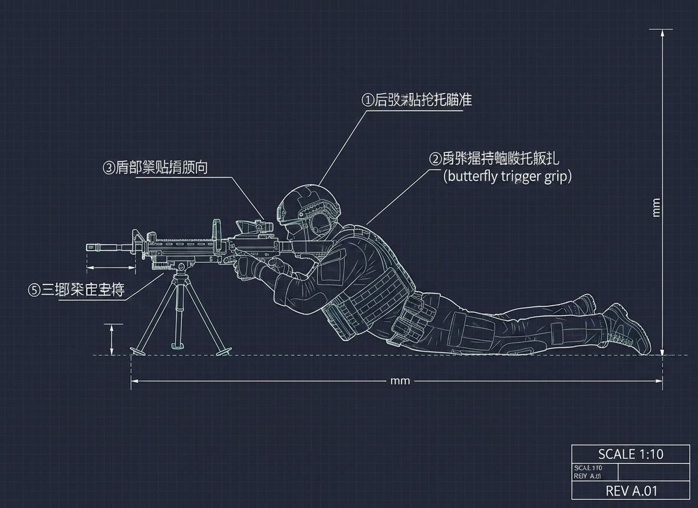
火箭筒
ROCKET LAUNCHER RPG-7 / AT4技术参数 & 动画表现
| 型号 | 口径 | 重量 | 有效射程 | 穿甲 |
|---|---|---|---|---|
| RPG-7 | 85mm (PG-7V) | 7.0 kg | 200/500m | 260mm RHA |
| AT4 | 84mm | 6.7 kg | 300m | 400mm RHA |
动画表现要点
无后坐力发射
RPG发射时，射手肩部几乎感受不到后坐力（后喷焰抵消了反作用力），但身体会因巨大的声浪和冲击波产生本能的震颤。
后方喷焰 (Backblast)
发射瞬间，发射筒后方喷出巨大的锥形火焰和高速气流，危险区域可达后方30米。会扬起巨量尘土。
火箭弹飞行
弹体飞出发射筒约10米后，火箭发动机点火，弹体尾部喷出尾焰并加速，同时展开稳定尾翼旋转飞行。
持枪与战术规范
肩扛姿势 — 发射筒中段扛在右肩上。右手握住前方的手枪式握把，左手握住后方的辅助握把。
侧身防冲击 — 身体侧向目标，重心略微前移。头部紧贴光学瞄准镜或机械瞄具，佩戴护目镜和耳罩防震。
后方清空 — 发射前必须大喊"Backblast Area Clear!"，确保尾焰危险区内没有友军或墙壁。
弹药 & 真实参考
PG-7V 反坦克高爆弹 (HEAT)
弹头直径: 85mm | 全弹长: 约950mm | 全重: 2.25 kg | 初速: 115 m/s (助推后达300 m/s) | 弹头前部呈尖锥形，后部连接细长的火箭发动机和发射药管。
发射原理
击发后，发射药将弹体推出发射管（产生后喷焰）；弹体飞出约11米后，火箭发动机点火加速飞行，减少了对射手的烧伤风险。
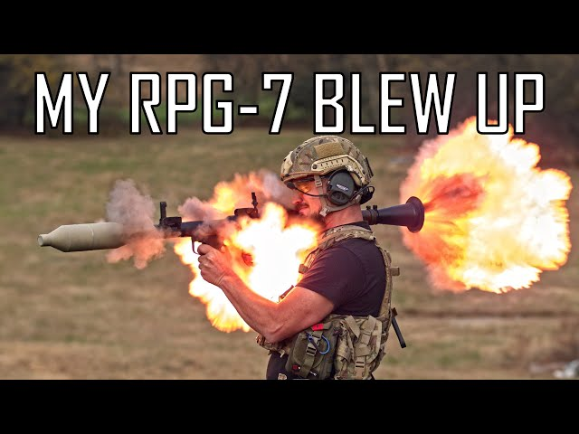
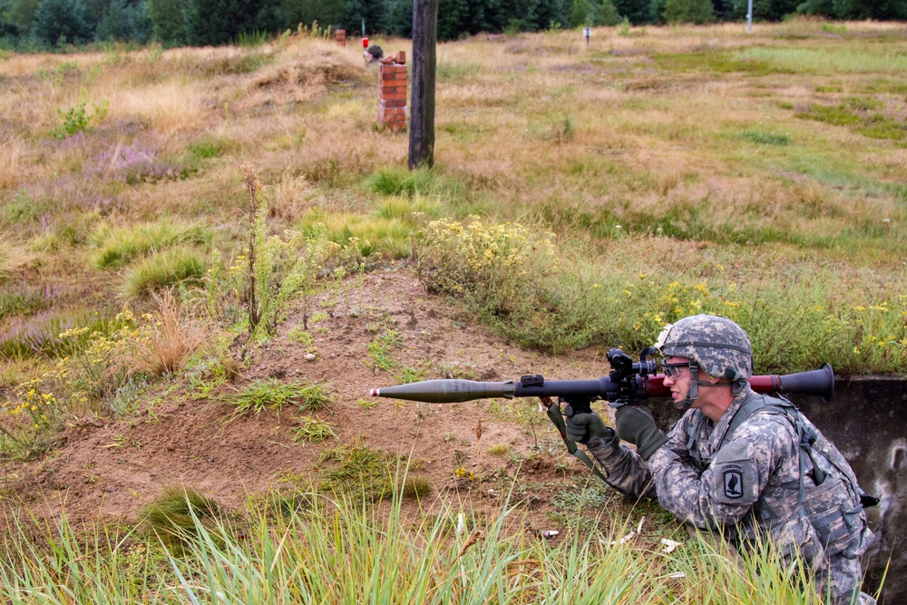
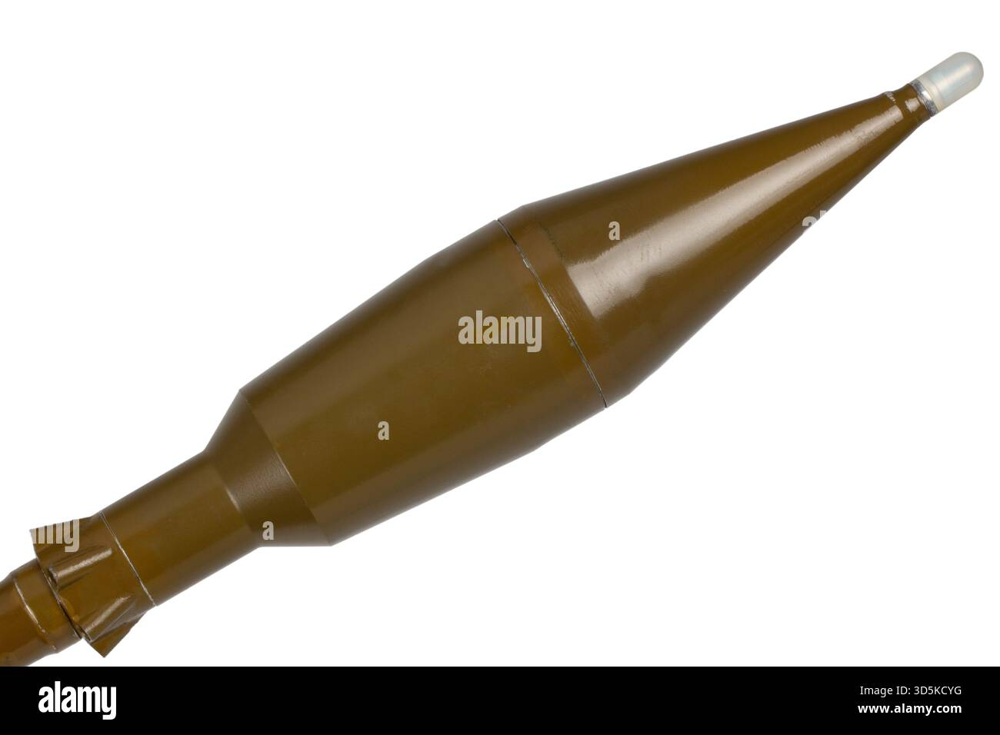
动作关键插图
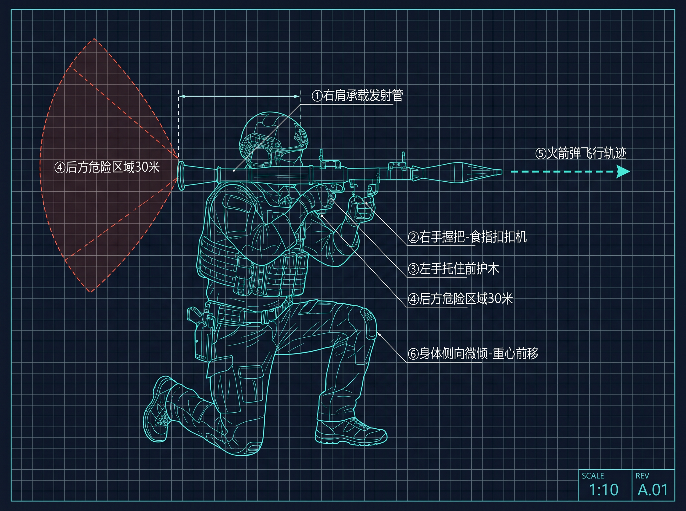
匕首
COMBAT KNIFE KA-BAR USMC / M9 刺刀技术参数 & 动画表现
| 型号 | 刃长 | 全长 | 重量 | 刃材 |
|---|---|---|---|---|
| KA-BAR USMC | 7"/178mm | 11.875"/302mm | 318g | 1095碳钢 |
| M9 刺刀 | 7"/178mm | 12.25"/311mm | 370g | 不锈钢 |
动画表现要点
攻击动作
挥砍(Slash)动作要迅猛带出残影；穿刺(Thrust)动作要直线发力，利用身体重心前移增加破坏力。
防守反击
利用非持刀手进行格挡、控制敌人武器臂，随后持刀手瞬间突入致命部位。动作强调速度和爆发力。
重量感
虽然匕首很轻（约318g），但攻击动作需要全身协调发力。挥砍时手臂、肩膀和腰部的旋转要协调一致。
握法与格斗规范
正握 (Saber Grip) — 刀刃朝前，拇指压在刀柄上方或护手上。距离最长，适合挥砍和中距离对峙。
反握 (Reverse Grip) — 刀刃朝下，从拳头下方伸出。极近距离内穿刺力量最大，CQC中极具杀伤力。
格斗站姿 — 侧身站立，持刀手在后（隐藏意图并保护武器），非持刀手在前（测距、格挡和控制）。重心放低，保持步法灵活。
弹药 & 真实参考
动作关键插图
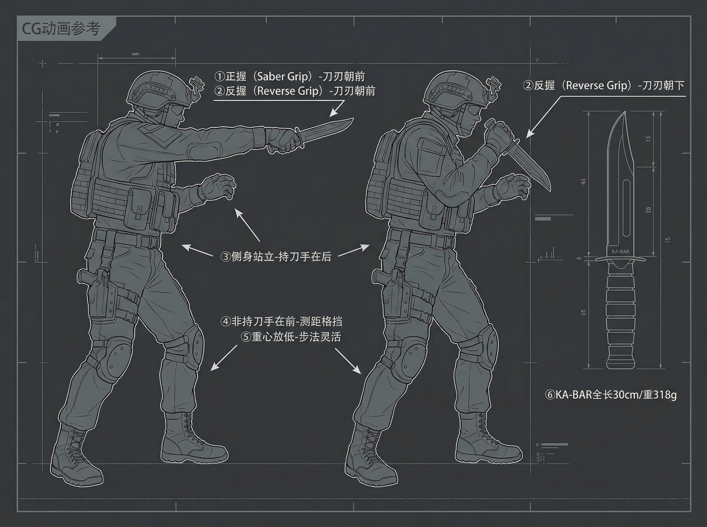